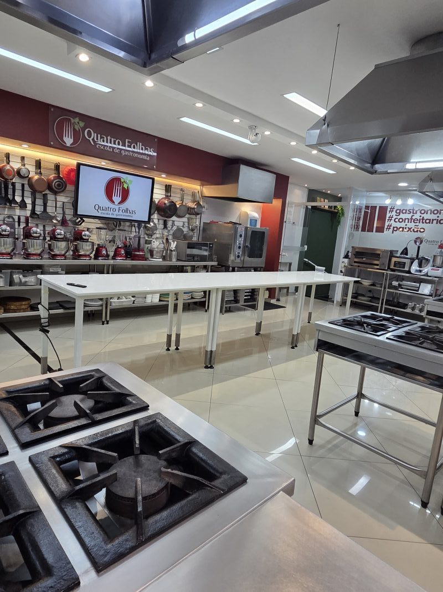
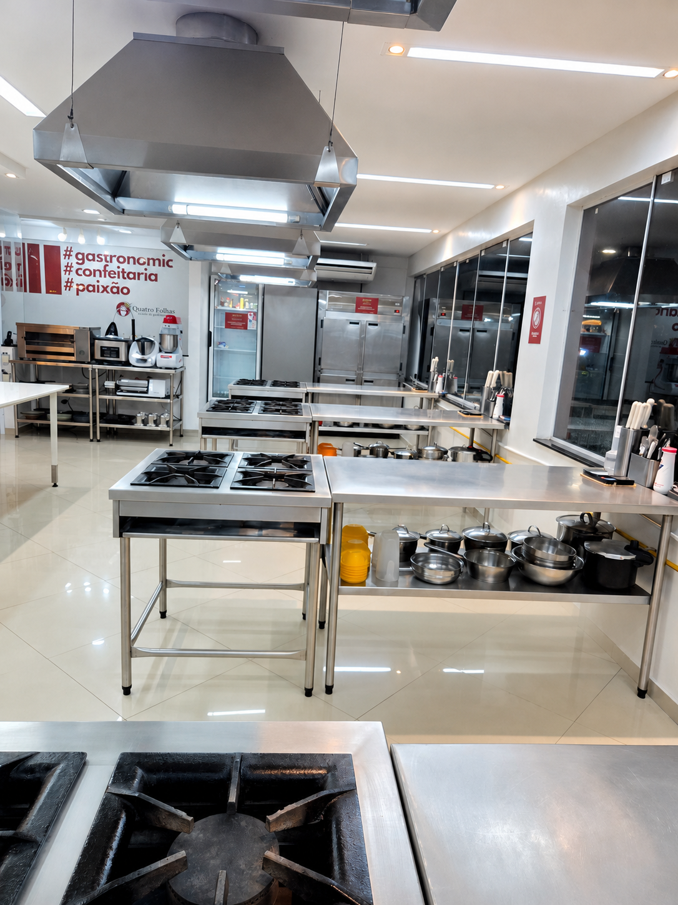
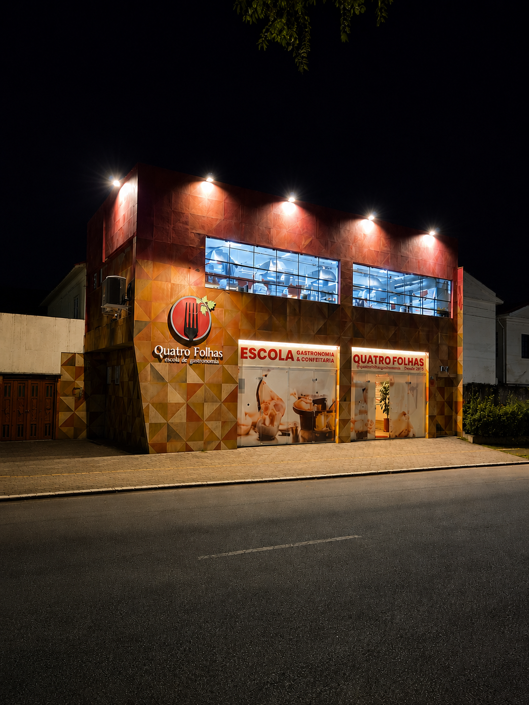
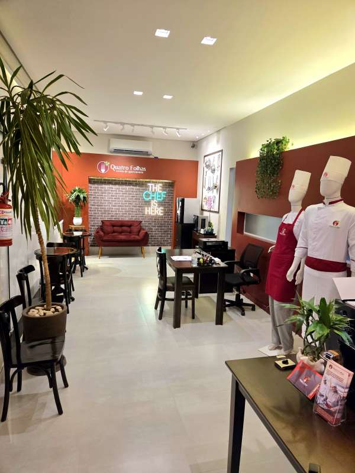
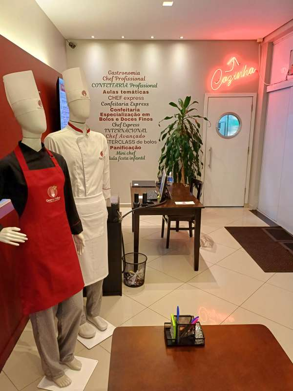
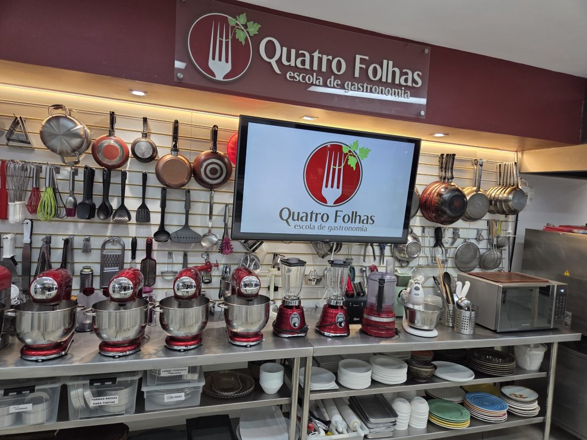

Uma escola com unidade própria, cozinha equipada e identidade reconhecida.
A Escola
Uma escola de gastronomia para formar, receber e inspirar
Desde 2015, a Quatro Folhas une técnica, prática, estrutura profissional e acolhimento para formar pessoas por meio da gastronomia.
Desde 2015
Cozinha equipada
Aulas práticas
experiências
O aprendizado acontece na bancada, com acompanhamento próximo e repertório técnico.
A escola também recebe crianças, empresas, marcas, experiências e projetos especiais.
Conheça a estrutura antes de escolher curso, proposta ou parceria.
História
Uma escola construída em torno da prática e da experiência

Formação
Cursos para quem quer aprender ou elevar o nível de conhecimento em gastronomia, confeitaria e técnicas de cozinha com orientação próxima e rotina prática.
Vivência
Aulas temáticas, festas infantis, projetos para escolas e experiências corporativas fazem a escola acontecer além da sala de aula.
Conexão
Parcerias com marcas, banco de oportunidades e projetos especiais fortalecem o ecossistema em torno da gastronomia.
Estrutura
Espaço real para aprender, criar, gravar e receber
A unidade combina cozinha equipada, bancadas de prática, áreas de apoio e ambientes preparados para cursos, experiências, eventos e produções.





Diferenciais
O que torna a experiência Quatro Folhas mais completa
A experiência combina corpo docente qualificado, estrutura profissional, turmas reduzidas, tecnologia de apoio e uma jornada que vai além da sala de aula.
Professores pós-graduados
Profissionais com formação acadêmica, didática e vasta experiência no mercado de trabalho.
Cozinha profissional equipada
Ambiente preparado para cursos, aulas, produções e experiências com rotina de cozinha real.
Apenas 16 alunos por turma
Turmas reduzidas para melhorar acompanhamento, prática e relacionamento com os professores.
App e portal do aluno
Materiais, comunicados, pagamentos e certificados organizados para apoiar a jornada.
Intercâmbio gastronômico
Vivência internacional em Buenos Aires para alunos dos cursos profissionalizantes.
Ver intercâmbioHistórico em TV e produções
A escola já foi cenário para programas, realities, streaming e conteúdos gastronômicos.
Ver mídia e gravaçõesMúltiplas jornadas
Cursos, aulas temáticas, crianças, escolas, empresas, marcas e carreira.
Ver vida na escolaVisita
Venha conhecer a Quatro Folhas
Fale com a equipe para agendar uma visita, tirar dúvidas sobre cursos ou entender qual experiência combina com seu momento.
Visitas com agendamento
Tatuapé · São Paulo
Atendimento pelo WhatsApp